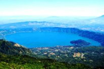
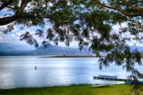
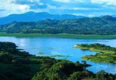

|
El Salvador cuenta con un grupo reducido de lagos en los cuales el turismo se pone de manifiesto ya que cuentan como un atractivo natural donde es posible combinar la magia del paisaje ecoturístico con la diversión y la cultura que se encuentra en cada lugar. Los lagos forma parte del paisaje natural que hace posible conectar la vida humana, con la vida acuática y la vida silvestre. Son lugares propicios para visitar en familia. Estos son cuerpos de agua dulce que poseen una gran extensión y se forman casi siempre por la desembocadura de ríos a su alrededor o por las características del terreno que permite la acumulación de aguas lluvias. Por lo anterior en El Salvador se encuentran más lagunas que lagos. También son parte importante para la vida en los ecosistemas, ya que en ellos crecen diversos tipos de peces y también se encuentran muchas aves que apreciar. Como dato curioso, el lago más grande de El Salvador es el lago Suchitlán, con una superficie de 135 kilómetros cuadrados, el cual se ubica en la zona norte de El Salvador; este lago se formó de manera artificial en la década de los 70s sobre el recorrido del río Lempa, como parte de la construcción de una central hidroeléctrica. Aquí encontrarás más información sobre estos interesantes sitios para disfrutar del turismo natural en El Salvador. |
|  |  |  |
| Lago de Coatepeque | Lago Guija | Lago Suchitlán |